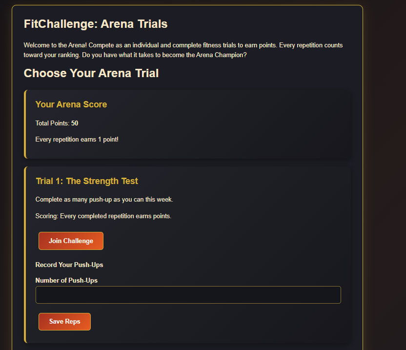
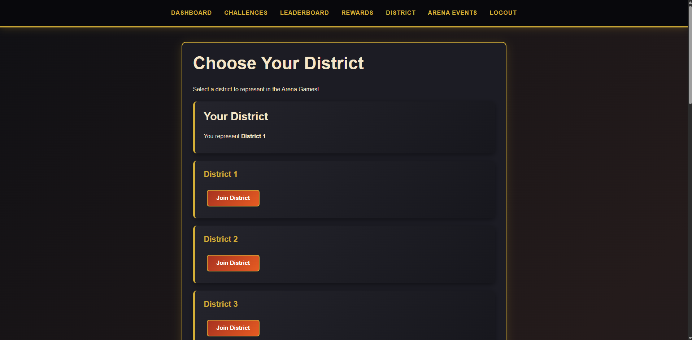
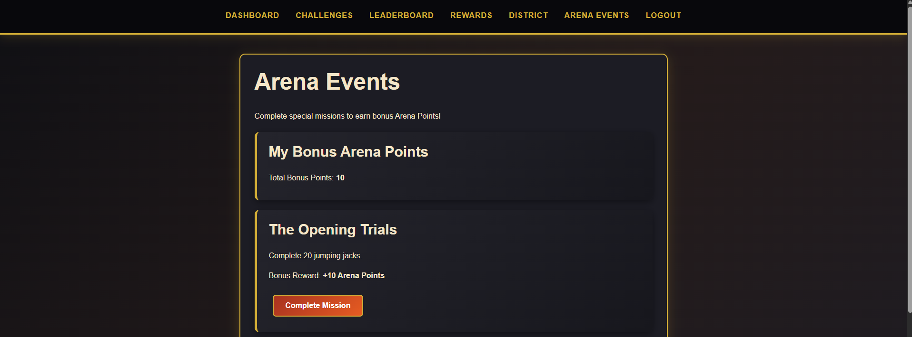

Project Description
FitChallengeL Arena Trials is a fitness competition website designed to make exercising more exciting through weekly workout challenges, Users can create accounts, record reptitions for exercises such as jumping jacks, squats, and push-ups, and earn Arena Points. Players can join one of 12 districts, compete on individual and team leaderboards, and complete special Arena Events to earn bonus points. The website also includes a weekly competition countdown, a rewards page, and a Hall of Victors that recognizes previous weekly champions. The goal of Fitchallenge is to encourahe fitness through friendly competition, teamwork, and personal improvement.
Innovation Claim
Innovation Claim: FitChallenge: Arena Trials combines fitness tracking with an arena-style competition system to make exercising more engaging and motivating. Unlike traditional fitness trackers that mainly record individual progress, FitChallenge allows users to compete in weekly workout challenges, join one of 12 Districts, and earn Arena Points through completed reptitions. The website also introduces special Arena Events that award bonus points for completing specific exercise requirements. Individual and District leaderboards encouarge friendly competition, while the Hall of Victors recognizes weekly champions. These features create an interactive fitness experience that combines persona; improvement, teamwork, and competitive challenges.
Primary Traget Market
FitChallenge: Arena Trials is designed for high school students, college students, beginners, and intermediate fitness enthusiasts who want to make exercising more enjoyable through friendly competition.
Secondary Target Market
The secondary target market includes sports teams, fitness clubs, group of friends, and online fitness communities interested in team-based challenges and competitive workout activities.
Current SIP409 Progress
November 2026: FitChallenge: Arena Trials has reached its final SIP Showcase stage. The website includes user registration and login, weekly workout challenges, repetition tracking, and Arena Points. Users can join one of 12 Districts, compete on individual and District leaderboards, and complete special Arena Events to earn bonus points. Additional features include a weekly competition countdown, a Rewards page, and a Hall of Victors recognizing previous weekly champions The main features have been developed and functionally tested. The project is now being prepared for its final five-minute SIP Showcase presentation.
SIP Innovation Brief
This document contains the current version of my SIP Innovation Brief
View My SIP Innovation BriefSIP 311 Pitch Idea
This is my Pitch Idea for my Fitness Workout
FitChallenge Dashboard
The Dashboard displays the player's workout progress, total Arena Points, and weekly competition information.

FitChallenge workout Challenges
Players can complete jumping jacks, squats, and push-ups. They record their reptitions to earn Arena Points and compete against other players.

FitChallenge District System
Players can choose one of 12 Districts to represent. Their workout repetitions contribute Arena Points toward their District's total score. The District leaderboard allows players to compete as teams and see which District is leading.

FitChallenge Arena Events
Arena Events are special fitness missions that allow players to earn bonus Arena Points. Players can participate in the Opening Trials, District Endurance, and The Final Stand. Each event requires players to complete a specific number of repetitions before earning bonus points. Players can only claim each event reward once per week.
